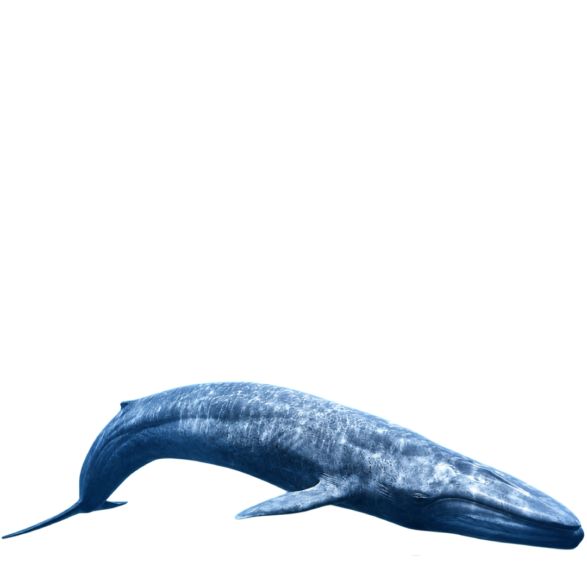
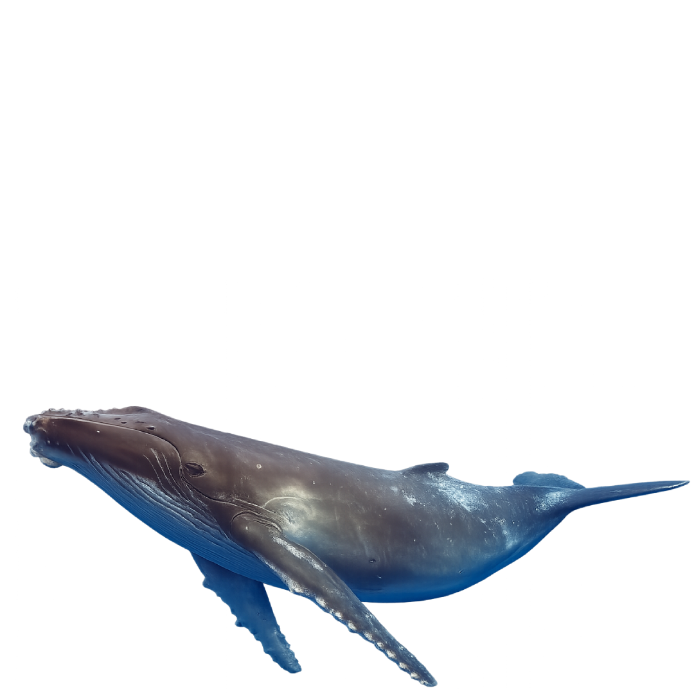
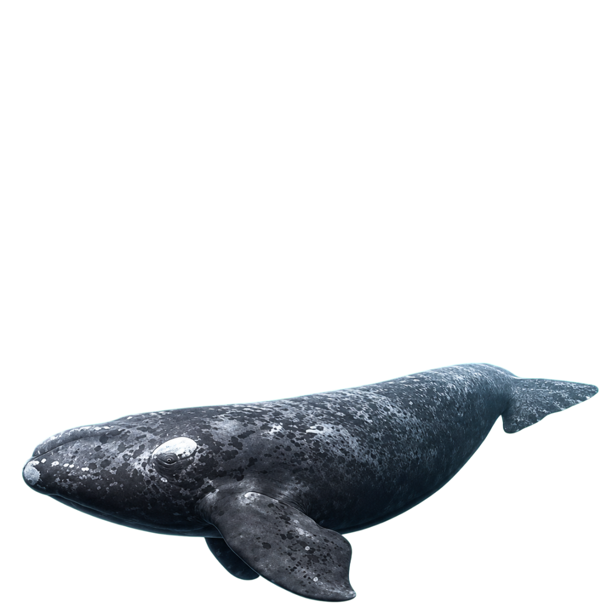
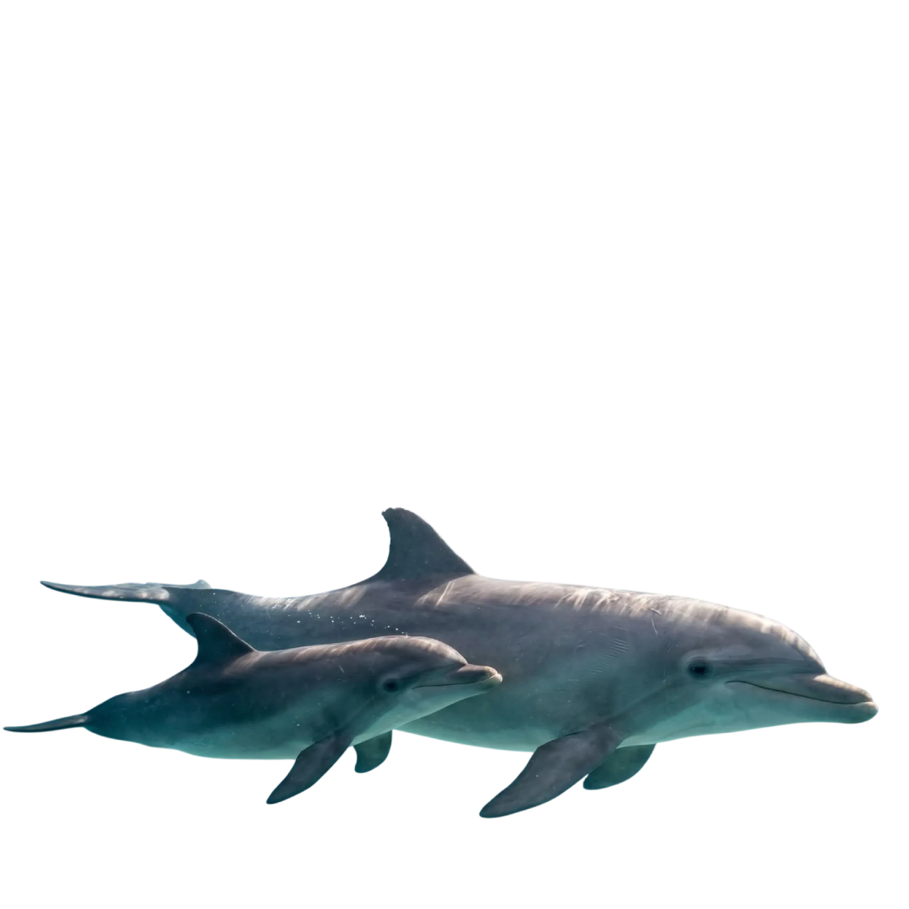
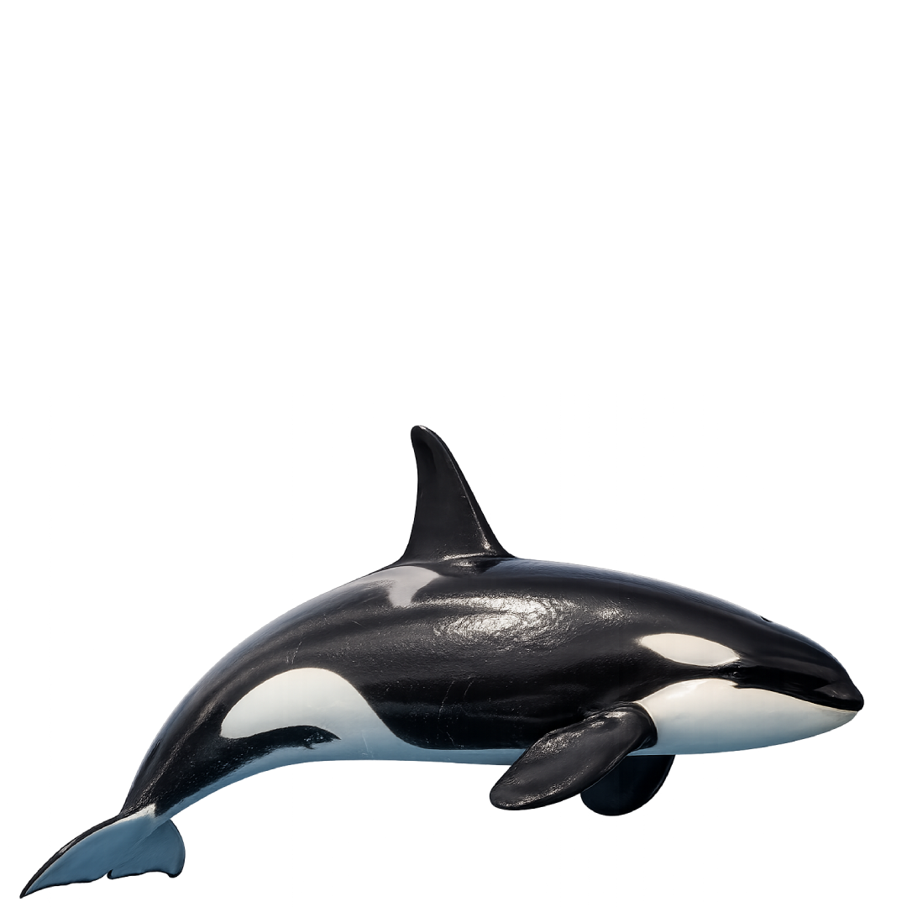
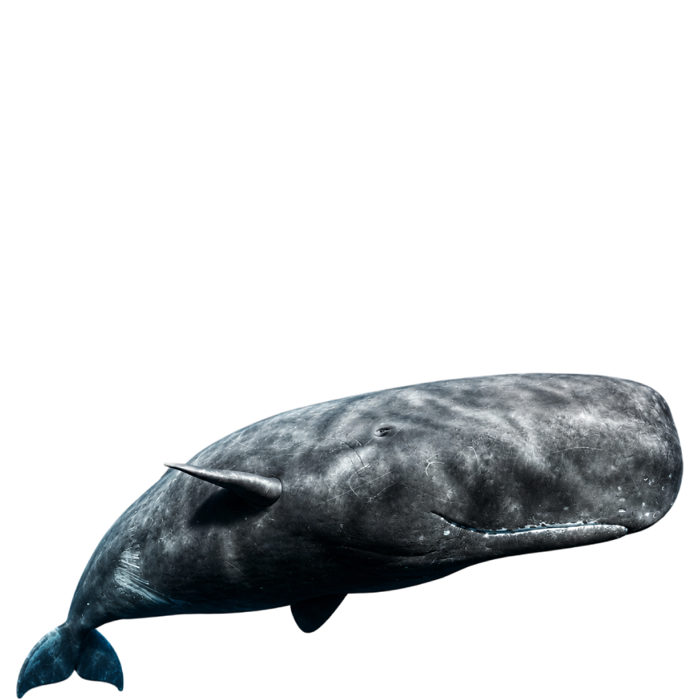
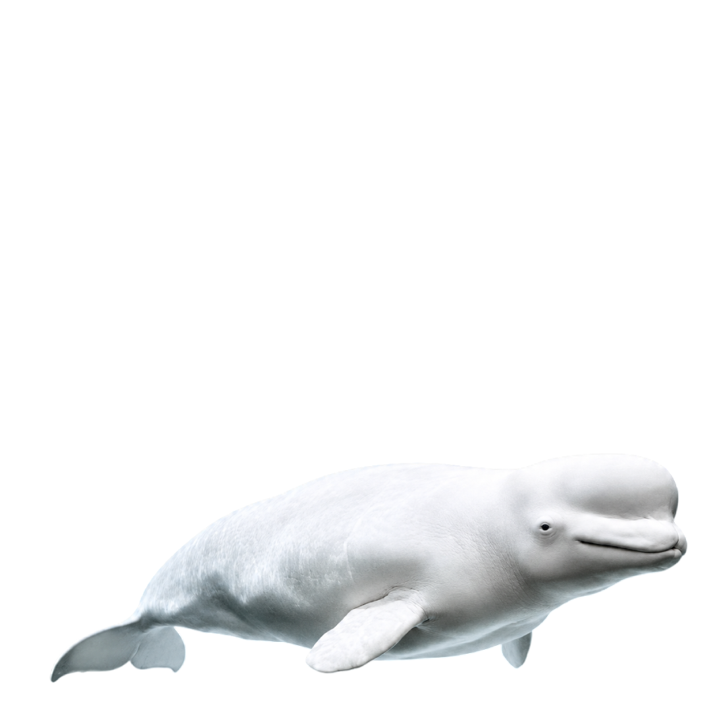

CETÁRIO
Explore o mundo dos principais cetáceos do mundo

Jubarte
Megaptera novaengliae
Franca do Pacífico
Eubalaena japonica
Nariz de Garrafa
Tursiops truncatus
Orca
Orcinus orca
Cachalote
Physeter macrocephalus
Beluga
Delphinapterus leucasSobre o site
Os cetáceos são animais incríveis e misteriosos e entender mais sobre criaturas tão diversas e versáteis em nosso mundo é um prazer imenso. Esse site foi criado por curiosidade e pesquisa, para desenvolver habilidades e conseguir criar um portfólio demonstrando para o mercado todas as minhas competências. As informações foram compiladas a partir de fontes públicas e têm caráter educacional.